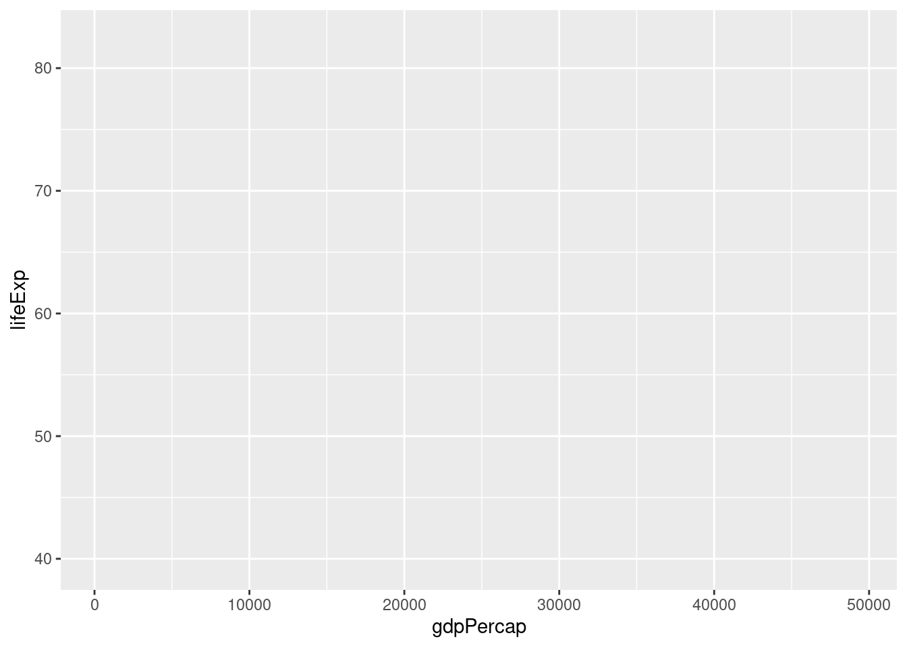
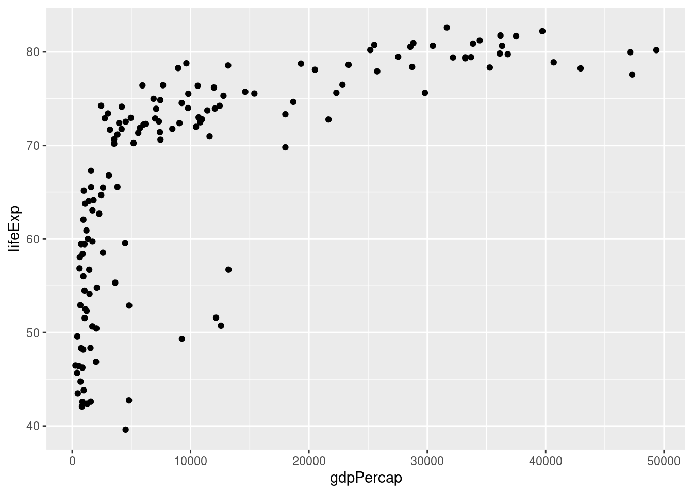
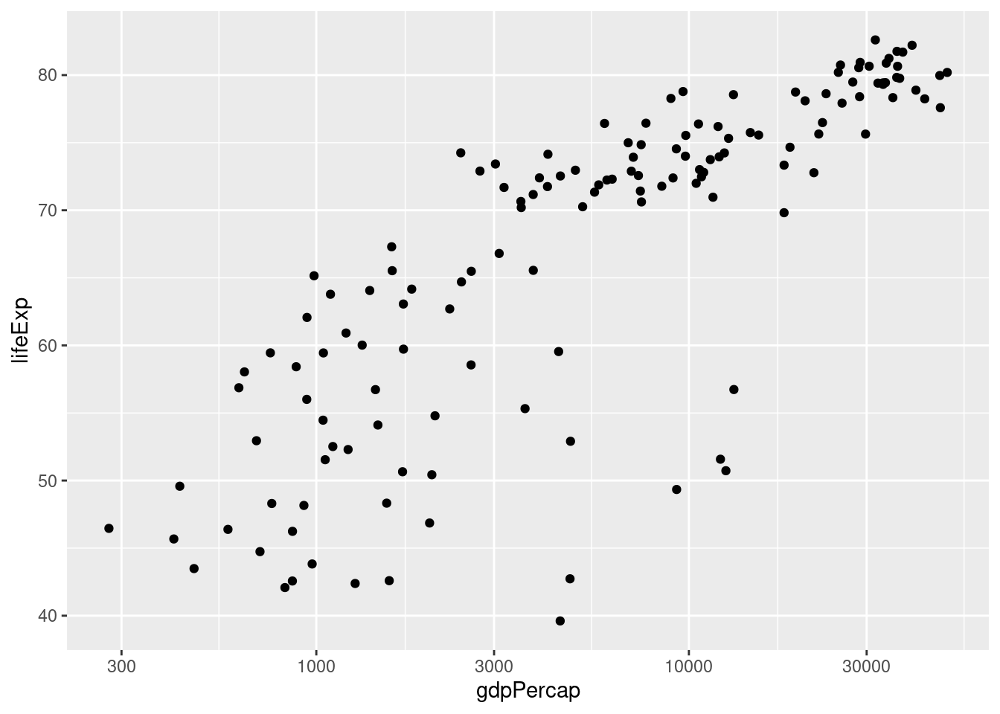
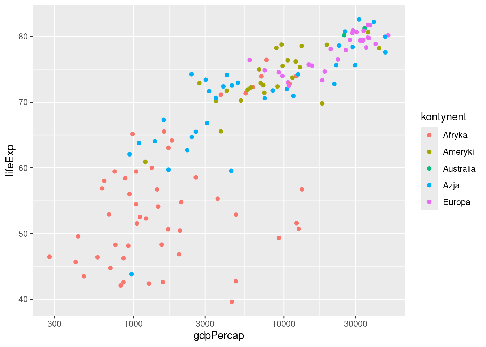
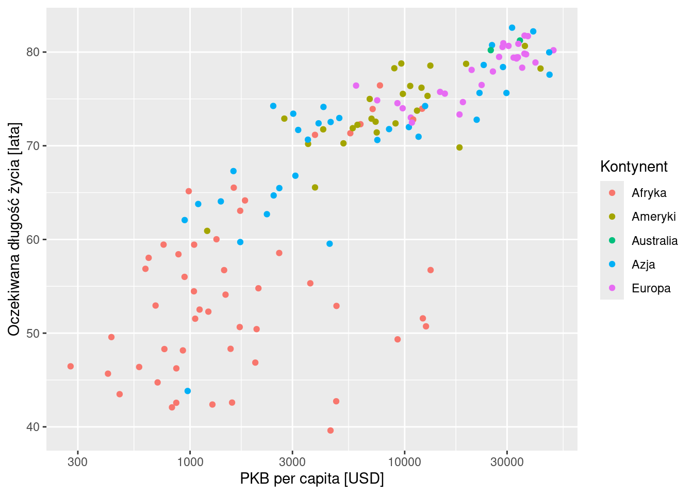
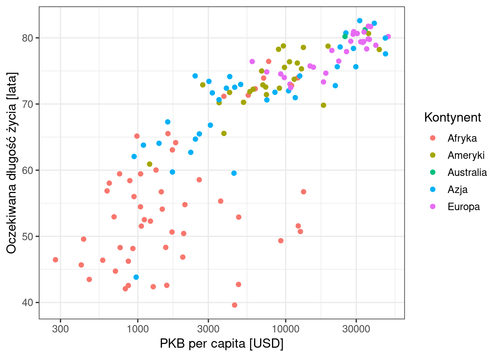
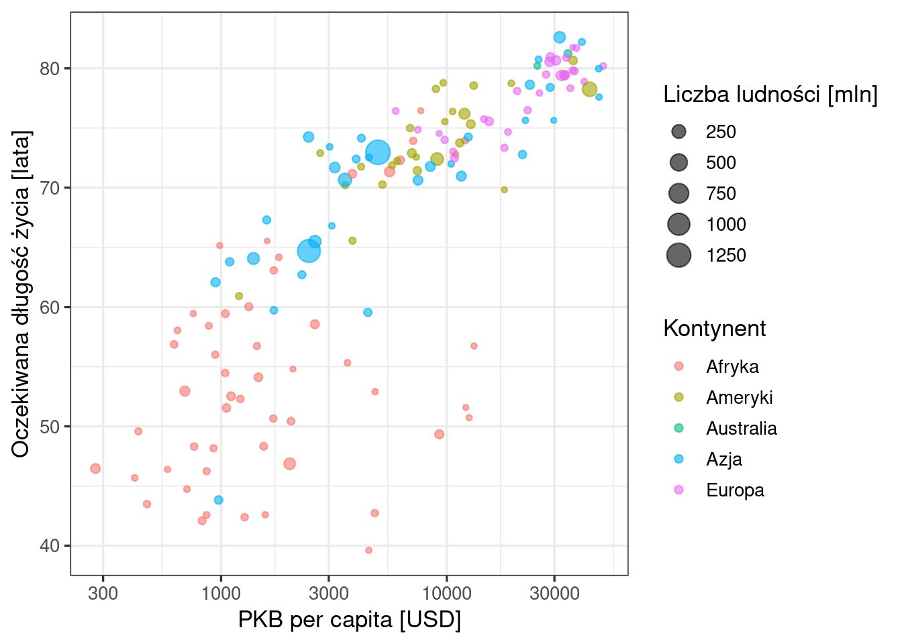
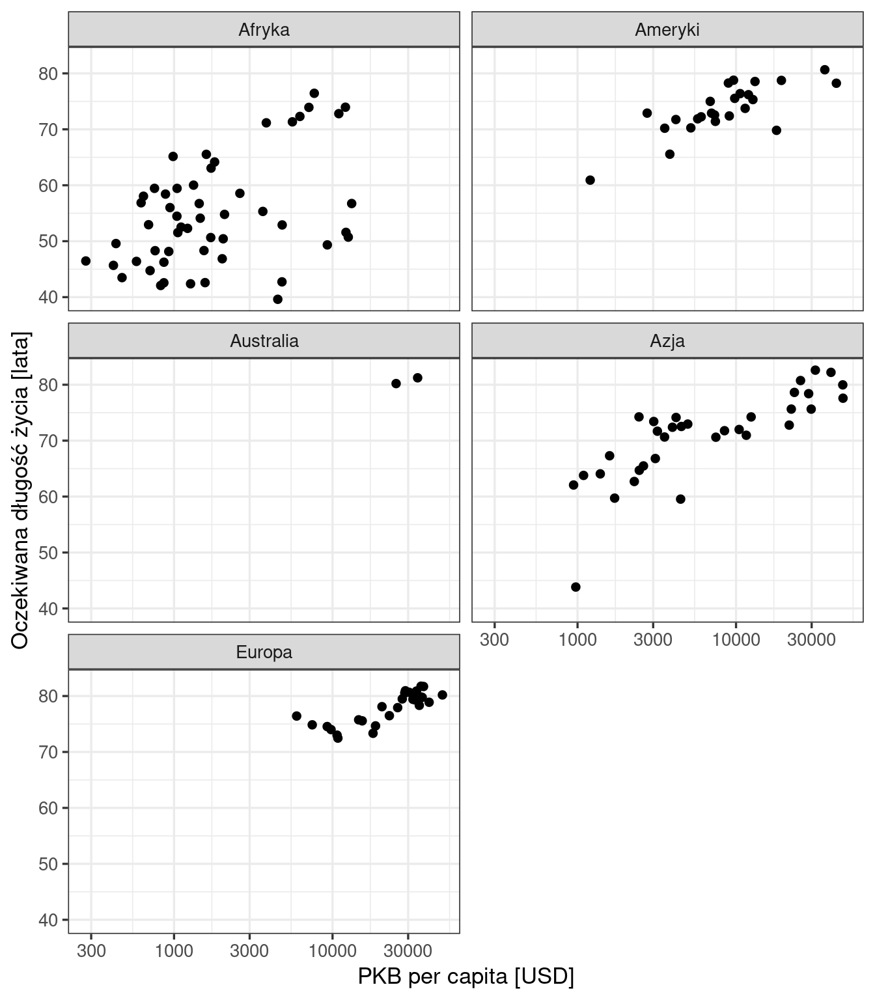
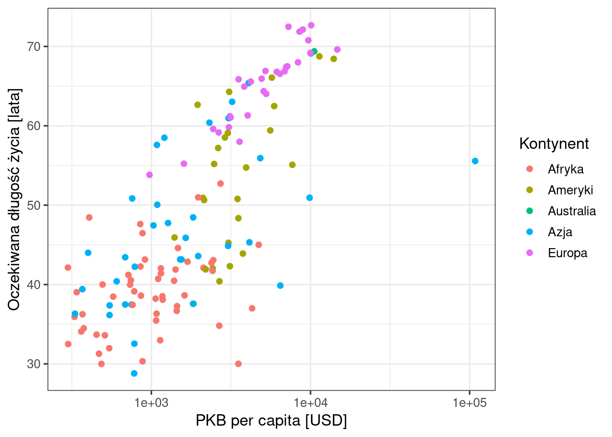
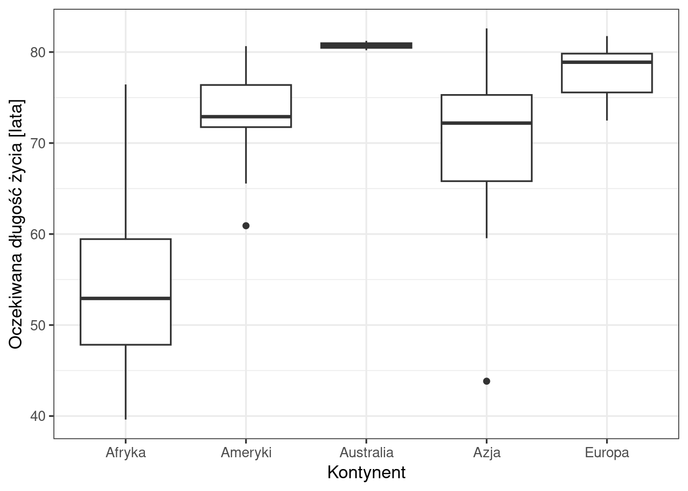

4 Wykresy w ggplot2
Pakiet ggplot2 tworzy wykres z elementów łączonych znakiem +: danych, mapowania zmiennych na cechy graficzne, obiektów geometrycznych, skal, podpisów i motywu. Rozdział buduje jeden wykres krok po kroku, a następnie pokazuje, jak zmienić działający wykres: zmienną, sposób grupowania, obiekt geometryczny albo podział na panele. Teorię, na której opiera się pakiet, przedstawia Rozdział 13.
Kod rozdziału jest dostępny w pliku kod/04_wykresy_ggplot2.qmd.
4.1 Przygotowanie danych
Rozdział wykorzystuje dane Gapminder z 2007 roku (Sekcja 3.1): 142 kraje, dla których dostępne są m.in. PKB per capita (gdpPercap), oczekiwana długość życia (lifeExp), liczba ludności (pop) i kontynent (kontynent).
# wczytanie pakietu tidyverse (zawiera ggplot2)
library(tidyverse)
# wczytanie danych i zamiana kolumn tekstowych na zmienne typu factor
dane <- read.csv("dane/gapminder_regions.csv", encoding = "UTF-8") |>
mutate(across(where(is.character), as.factor))
# obserwacje z 2007 roku
dane2007 <- dane |>
filter(year == 2007)4.2 Wykres krok po kroku
Wykres przedstawia zależność oczekiwanej długości życia od PKB per capita w 2007 roku. Każdy krok dodaje do kodu jeden element; nowy element oznaczono w kodzie komentarzem.
4.2.1 Krok 1: dane i mapowanie
ggplot(data = dane2007, aes(x = gdpPercap, y = lifeExp)) # dane i mapowanie
ggplot()rozpoczyna każdy wykres. Argumentdatawskazuje tabelę z danymi.aes()(od ang. aesthetics) określa mapowanie: przypisanie zmiennych do cech graficznych wykresu (estetyk, Sekcja 13.3.1).x = gdpPercap— PKB per capita na osi x,y = lifeExp— oczekiwana długość życia na osi y.- Mapowanie wyznacza osie i ich zakresy. Wykres nie zawiera jeszcze punktów, ponieważ nie wskazano obiektu geometrycznego (Rycina 4.1).
4.2.2 Krok 2: obiekt geometryczny
ggplot(data = dane2007, aes(x = gdpPercap, y = lifeExp)) +
geom_point() # obiekt geometryczny: punkty
geom_point()rysuje jeden punkt dla każdej obserwacji, czyli dla każdego kraju (Rycina 4.2).- Znak
+dołącza kolejny element do wykresu. Znajduje się na końcu wiersza, po którym następuje kolejny element. - Funkcje rysujące obiekty geometryczne mają przedrostek
geom_:geom_point()— punkty,geom_histogram()— histogram,geom_boxplot()— wykres pudełkowy,geom_line()— linie,geom_col()— słupki.
4.2.3 Krok 3: skala osi
ggplot(data = dane2007, aes(x = gdpPercap, y = lifeExp)) +
geom_point() +
scale_x_log10() # skala logarytmiczna osi x
scale_x_log10()zmienia skalę osi x na logarytmiczną. Na osi opisano wartości 300, 1000, 3000, 10 000 i 30 000. Równe odległości na osi odpowiadają równym ilorazom wartości: odległość od 1000 do 10 000 jest taka sama jak od 3000 do 30 000.- Dane pozostają te same, zmienia się sposób ich odwzorowania na osi. Na rycinie 4.2 większość punktów skupia się przy lewej krawędzi wykresu; na rycinie 4.3 punkty rozkładają się na całej szerokości osi.
- Funkcje określające skale mają przedrostek
scale_.
4.2.4 Krok 4: kolejne mapowanie
ggplot(data = dane2007, aes(x = gdpPercap, y = lifeExp,
colour = kontynent)) + # kolor według kontynentu
geom_point() +
scale_x_log10()
colour = kontynentwaes()przypisuje zmiennąkontynentdo koloru punktu. Każdy kontynent otrzymuje inny kolor, aggplot2automatycznie dodaje legendę (Rycina 4.4).- Jedno wywołanie
aes()może zawierać kilka mapowań. Inne cechy graficzne, do których przypisuje się zmienne, to m.in.size(wielkość),shape(kształt) ifill(wypełnienie).
4.2.5 Krok 5: podpisy
ggplot(data = dane2007, aes(x = gdpPercap, y = lifeExp,
colour = kontynent)) +
geom_point() +
scale_x_log10() +
labs(x = "PKB per capita [USD]", # podpisy osi i legendy
y = "Oczekiwana długość życia [lata]",
colour = "Kontynent")
labs()ustawia podpisy osi (x,y) i tytuł legendy (colour). Bez tego kroku osie opisane są nazwami kolumn (Rycina 4.4); podpis podaje nazwę zmiennej i jednostkę (Rycina 4.5).- Argumentem
titlefunkcjilabs()dodaje się tytuł wykresu.
4.2.6 Krok 6: motyw
ggplot(data = dane2007, aes(x = gdpPercap, y = lifeExp,
colour = kontynent)) +
geom_point() +
scale_x_log10() +
labs(x = "PKB per capita [USD]",
y = "Oczekiwana długość życia [lata]",
colour = "Kontynent") +
theme_bw(base_size = 13) # motyw: białe tło, czcionka 13
- Motyw określa wygląd elementów, które nie przedstawiają danych: tła, siatki, czcionek.
theme_bw()ustawia białe tło z szarą siatką, abase_size = 13— wielkość czcionki (Rycina 4.6). - Gotowe motywy mają przedrostek
theme_, np.theme_minimal(),theme_classic(). Zmiana motywu nie zmienia tego, co przedstawia wykres. - Argument
data =można pominąć — dane są pierwszym argumentem funkcjiggplot(). W przykładach raportów stosowany jest zapis skrócony:ggplot(dane2007, aes(...)).
4.2.7 Schemat wywołania
Każdy wykres w skrypcie ma ten sam układ:
ggplot(dane, aes(x = ..., y = ..., colour = ...)) + # dane i mapowanie
geom_...() + # obiekt geometryczny
scale_...() + # skale (opcjonalnie)
labs(...) + # podpisy
theme_...() # motywObiekty geometryczne rysowane są w kolejności zapisu: obiekt dodany później przykrywa obiekt dodany wcześniej.
4.3 Modyfikowanie wykresu
Działający wykres jest punktem wyjścia do kolejnych wykresów. Zmiana jednego elementu kodu zmienia to, co przedstawia wykres:
| Co zmienić | Gdzie w kodzie | Przykład |
|---|---|---|
| zmienną przypisaną do cechy graficznej | mapowanie w aes() |
dodanie size = pop / 1000000 |
| podział na panele | nowy element facet_wrap() |
facet_wrap(~ kontynent) |
| zakres danych | potok przed ggplot() |
filter(year == 1952) |
| obiekt geometryczny | funkcja geom_ i mapowanie |
geom_point() → geom_boxplot() |
4.3.1 Kolejna zmienna: wielkość punktu
ggplot(dane2007, aes(x = gdpPercap, y = lifeExp,
colour = kontynent,
size = pop / 1000000)) + # wielkość według ludności [mln]
geom_point(alpha = 0.6) + # punkty półprzezroczyste
scale_x_log10() +
labs(x = "PKB per capita [USD]",
y = "Oczekiwana długość życia [lata]",
colour = "Kontynent", size = "Liczba ludności [mln]") +
theme_bw(base_size = 13)
size = pop / 1000000waes()przypisuje liczbę ludności, wyrażoną w milionach, do wielkości punktu;ggplot2dodaje drugą legendę (Rycina 4.7). Przeliczenie na miliony upraszcza opis legendy.alpha = 0.6wgeom_point()ustawia przezroczystość punktów (0 — punkt niewidoczny, 1 — punkt nieprzezroczysty); nakładające się punkty pozostają widoczne. Argument podany pozaaes()ma tę samą wartość dla wszystkich punktów.
4.3.2 Podział na panele
ggplot(dane2007, aes(x = gdpPercap, y = lifeExp)) +
geom_point() +
scale_x_log10() +
facet_wrap(~ kontynent, ncol = 2) + # osobny panel dla kontynentu
labs(x = "PKB per capita [USD]",
y = "Oczekiwana długość życia [lata]") +
theme_bw(base_size = 13)
facet_wrap(~ kontynent)dzieli wykres na panele: każdy panel zawiera kraje jednego kontynentu (Rycina 4.8). Znak~(tylda) poprzedza nazwę zmiennej dzielącej, a argumentncol = 2ustala liczbę kolumn paneli.- Wszystkie panele mają te same skale osi, dlatego położenie punktów można porównywać między panelami.
- Podział na panele zastępuje tu kolor — mapowanie
colour = kontynentusunięto.
4.3.3 Inny zakres danych: wykres na końcu potoku
dane |>
filter(year == 1952) |> # obserwacje z 1952 roku
ggplot(aes(x = gdpPercap, y = lifeExp, colour = kontynent)) +
geom_point() +
scale_x_log10() +
labs(x = "PKB per capita [USD]",
y = "Oczekiwana długość życia [lata]",
colour = "Kontynent") +
theme_bw(base_size = 13)
- Potok wybiera obserwacje z 1952 roku i przekazuje je do
ggplot()jako dane (Rycina 4.9). Wggplot()nie podaje się wtedy tabeli — dane pochodzą z potoku. - Kroki potoku łączy operator
|>, elementy wykresu — znak+.
4.3.4 Inny obiekt geometryczny
Zmiana obiektu geometrycznego zwykle wymaga zmiany mapowania. Wykres pudełkowy przedstawia rozkład zmiennej ilościowej w grupach, dlatego na osi x znajduje się zmienna jakościowa (kontynent), a na osi y — zmienna ilościowa (lifeExp):
ggplot(dane2007, aes(x = kontynent, y = lifeExp)) + # zmienna jakościowa na osi x
geom_boxplot() + # wykres pudełkowy
labs(x = "Kontynent",
y = "Oczekiwana długość życia [lata]") +
theme_bw(base_size = 13)
geom_boxplot()rysuje dla każdej kategorii osi x wykres pudełkowy (Rycina 4.10).- Skala logarytmiczna osi x została usunięta: dotyczyła PKB per capita, które nie występuje na tym wykresie.
- Odczytanie wykresu pudełkowego omawia Sekcja 15.3.
4.4 Najczęstsze błędy
| Komunikat albo objaw | Przyczyna | Przykład błędnego zapisu |
|---|---|---|
`mapping` must be created by `aes()` z podpowiedzią Did you use … instead of +? |
operator potoku zamiast + między elementami wykresu |
operator potoku między ggplot(...) a geom_point() |
Cannot use + with a single argument z podpowiedzią Did you accidentally put + on a new line? |
+ na początku wiersza zamiast na końcu poprzedniego |
wiersz zaczynający się od + geom_point() |
object 'kontynent' not found |
mapowanie zmiennej poza aes() |
geom_point(colour = kontynent) |
| legenda z jedną pozycją, np. „blue” | stały kolor wpisany w aes() — ggplot2 traktuje tekst jako zmienną |
aes(colour = "blue") zamiast geom_point(colour = "blue") |
object 'lifeExpp' not found |
błąd w nazwie kolumny | aes(y = lifeExpp) |
4.5 Zadania do samodzielnego wykonania
Zadania polegają na modyfikacji kodu z rozdziału i wykonuje się je w przeglądarce, bez instalowania R. Kod w polu można zmienić i uruchomić przyciskiem Run Code. Pierwsze uruchomienie pobiera środowisko R i pakiety, dlatego trwa dłużej i wymaga połączenia z internetem; jeżeli po kliknięciu wynik się nie pojawia, należy odczekać i kliknąć przycisk ponownie. Rozwiązanie wyświetla przycisk Show Solution.
Zadanie 1. Inna zmienna przedstawiona kolorem. Zmień mapowanie koloru z kontynentu na grupę dochodową (income_grp_pl) i popraw tytuł legendy. Kraje bez przypisanej grupy pomiń, zastępując dane2007 zapisem filter(dane2007, income_grp_pl != "").
ggplot(data = filter(dane2007, income_grp_pl != ""),
aes(x = gdpPercap, y = lifeExp, colour = income_grp_pl)) +
geom_point() +
scale_x_log10() +
labs(x = "PKB per capita [USD]",
y = "Oczekiwana długość życia [lata]",
colour = "Grupa dochodowa") +
theme_bw(base_size = 13)Zadanie 2. Inny rok. Wykonaj ten sam wykres dla 1977 roku.
dane |>
filter(year == 1977) |>
ggplot(aes(x = gdpPercap, y = lifeExp, colour = kontynent)) +
geom_point() +
scale_x_log10() +
labs(x = "PKB per capita [USD]",
y = "Oczekiwana długość życia [lata]",
colour = "Kontynent") +
theme_bw(base_size = 13)Zadanie 3. Inny podział na panele. Podziel wykres na panele według roku zamiast kontynentu. Wybierz lata 1952, 1977 i 2007: zacznij potok od tabeli dane z warunkiem filter(year %in% c(1952, 1977, 2007)) i ustaw panele w jednym wierszu.
dane |>
filter(year %in% c(1952, 1977, 2007)) |>
ggplot(aes(x = gdpPercap, y = lifeExp)) +
geom_point() +
scale_x_log10() +
facet_wrap(~ year, ncol = 3) +
labs(x = "PKB per capita [USD]",
y = "Oczekiwana długość życia [lata]") +
theme_bw(base_size = 13)Zadanie 4. Inny obiekt geometryczny. Zamień wykres pudełkowy na wykres skrzypcowy (geom_violin()). Pozostałe warstwy pozostają bez zmian.
ggplot(dane2007, aes(x = kontynent, y = lifeExp)) +
geom_violin() +
labs(x = "Kontynent",
y = "Oczekiwana długość życia [lata]") +
theme_bw(base_size = 13)